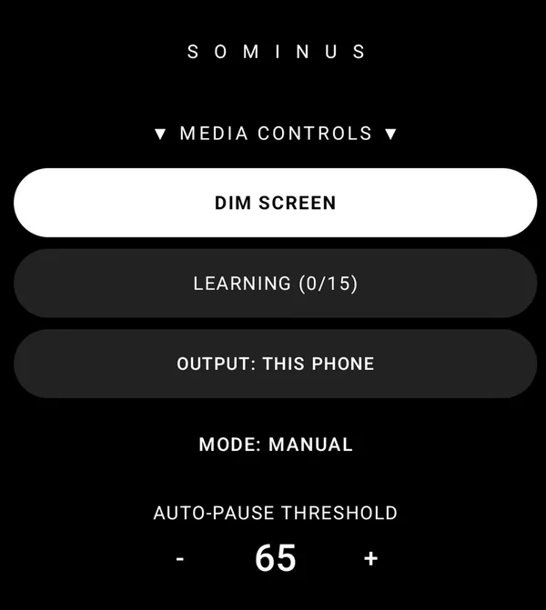
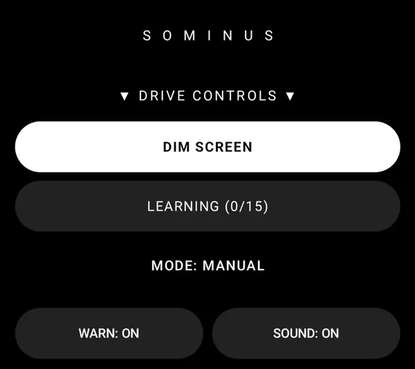

For Wear OS and Android
Your show can wait.
Sominus pauses what you're watching on your phone, a Bluetooth-connected TV, or your PC when your heart rate drops to the level you set.

Try everything free for 7 days, then unlock Sominus with a single one-time purchase.
Not a safety or medical device. If you feel drowsy, stop and rest.
How it works
Three steps.
-
Wear it
Sominus uses your Wear OS watch's heart-rate sensor, or a standard Bluetooth heart-rate sensor (such as a chest strap) paired with your phone.
-
Choose and set
Choose what gets paused: this phone, your TV or your PC. Set your own levels, or let Sominus learn your resting pulse.
-
Pick up where you left off
When your heart rate drops to the level you set, Sominus can pause what you're watching, so you can pick up where you left off.
Media Mode
Not a timer. It responds to your heart rate.
When your heart rate drops to the level you set, Sominus can pause what you're watching on your phone, a Bluetooth-connected TV, or your PC, so you can pick up where you left off.
- Works with most apps that accept a standard pause command.
- Sominus never accesses your streaming accounts or any app's data.
- Also pauses your Windows PC over your own Wi-Fi, with the Sominus Desktop helper.
- Dim-screen mode for dark rooms and night-time use.

Drive Mode
A heart-rate alarm on your wrist. Not a substitute for rest.
When your heart rate drops to the warning level you choose, your watch vibrates and sounds an alarm.
Set your own warning and alarm levels, with sound and vibration.
An extra nudge, never a reason to keep driving. If you feel drowsy, stop and rest.
Sominus is not a safety device. It can't prevent sleep and no alert is guaranteed. If you feel drowsy, stop and rest.
Official advice on tiredness and driving:

Works with
What you need.
Heart rate from
Wear OS watch
A Wear OS watch with a heart-rate sensor. Watch app and phone app included in one purchase.
Bluetooth heart-rate sensor
Or a standard Bluetooth heart-rate sensor, such as a chest strap, paired with your phone. Drive Mode's alarm is on your Wear OS watch.
Pauses what's playing on
Android phone
The Sominus phone app. Media Mode can pause what you're watching on the phone itself.
Bluetooth-connected TV
A TV you can connect to your phone by Bluetooth.
Windows PC
Needs Sominus Desktop, a helper for Windows 10 and 11, with your PC and phone on the same Wi-Fi. No account and no internet connection needed.
Get Sominus DesktopPausing works with most apps that accept a standard pause command. TV pausing needs a TV you can connect to your phone by Bluetooth. Not every TV supports it, so try it during the 7-day free trial.
Privacy
No account. No ads. No analytics.
Your heart rate is processed on your own watch and phone, and is never sent to me.
- Sominus has no servers.
- Watch-to-phone streaming uses Google's Wear OS connection, which may pass data through Google's servers. Google says data sent through its cloud is end-to-end encrypted.
- I don't sell or share your data.
Pricing
Try it for 7 days. Then buy it once.
Try everything free for 7 days, then unlock Sominus with a single one-time purchase.
- No subscription. No account. No ads.
- One purchase covers the watch app and the phone app.
- The free Sominus Desktop helper for Windows is a separate download.
- Payments are handled by Google Play. I never see your payment details.
See the price on Google Play.
FAQ
Honest answers.
Will it keep me awake?
No. Sominus can't keep anyone awake and can't prevent sleep. It responds when your heart rate drops to the level you set: Media Mode can pause what you're watching, and Drive Mode sounds an alarm on your watch.
Sominus is not a safety device. It can't prevent sleep and no alert is guaranteed. If you feel drowsy, stop and rest.
Is it a sleep detector?
No. Sominus doesn't detect sleep or drowsiness. It responds when your heart rate drops to the level you set, and heart-rate readings vary from person to person and depend on your watch or sensor and how it's worn.
Studies have linked growing sleepiness with a lower heart rate, but heart rate changes for many reasons, so it isn't a reliable drowsiness test on its own.
Sources: Buendia et al., 2019 · Persson et al., 2019
Is it a medical device?
No. Sominus is not a medical device and does not diagnose, treat, cure, or prevent any medical condition. For medical advice, diagnosis or treatment, consult a healthcare professional.
What do I need?
A Wear OS watch with a heart-rate sensor, or a standard Bluetooth heart-rate sensor paired with your phone, plus the Sominus phone app. Drive Mode's alarm is on your Wear OS watch. To pause a TV, you need a TV you can connect to your phone by Bluetooth. To pause a PC, you need Sominus Desktop on a Windows 10 or 11 PC on the same Wi-Fi as your phone. See Works with.
Which apps and TVs does it work with?
Works with most apps that accept a standard pause command. TV pausing needs a TV you can connect to your phone by Bluetooth. Not every TV supports it, so try it during the 7-day free trial.
Sominus never accesses your streaming accounts or any app's data.
How does it pause my TV or PC?
Sominus pauses what you're watching on your phone, a Bluetooth-connected TV, or your PC, and works with most apps that accept a standard pause command. I don't publish the technical details, but it never accesses your streaming accounts or any app's data.
Is there a subscription?
No. Try everything free for 7 days, then unlock Sominus with a single one-time purchase. One purchase covers the watch app and the phone app. See the price on Google Play.
What happens to my heart-rate data?
Your heart rate is processed on your own watch and phone. Sominus has no servers, no account and no analytics, and your heart rate is never sent to me. Watch-to-phone streaming uses Google's Wear OS connection, which may pass data through Google's servers; Google says data sent through its cloud is end-to-end encrypted. See the privacy policy.
Please note
Sominus is a convenience and wellness aid, not a safety device. It cannot prevent sleep, and no alert or pause is guaranteed: heart-rate readings vary from person to person and depend on your watch or sensor and how it's worn. Do not rely on it to drive while tired. If you feel drowsy, stop and rest.
Sominus is not a medical device and does not diagnose, treat, cure, or prevent any medical condition. For medical advice, diagnosis or treatment, consult a healthcare professional.